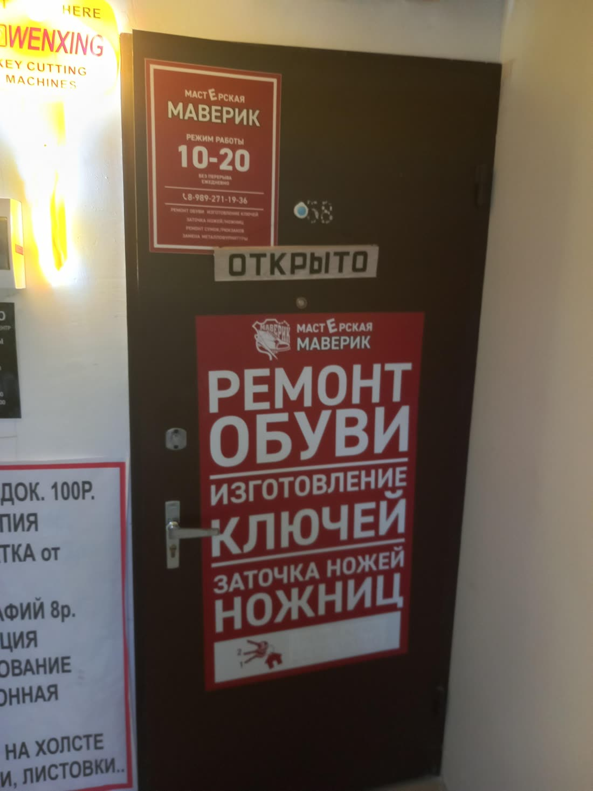
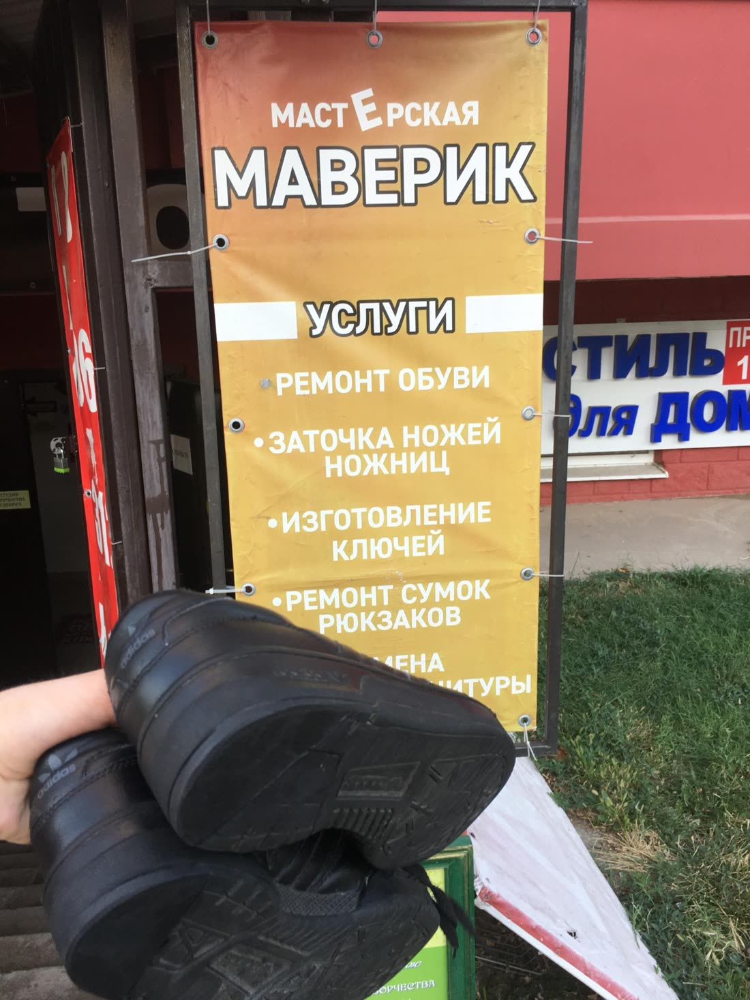
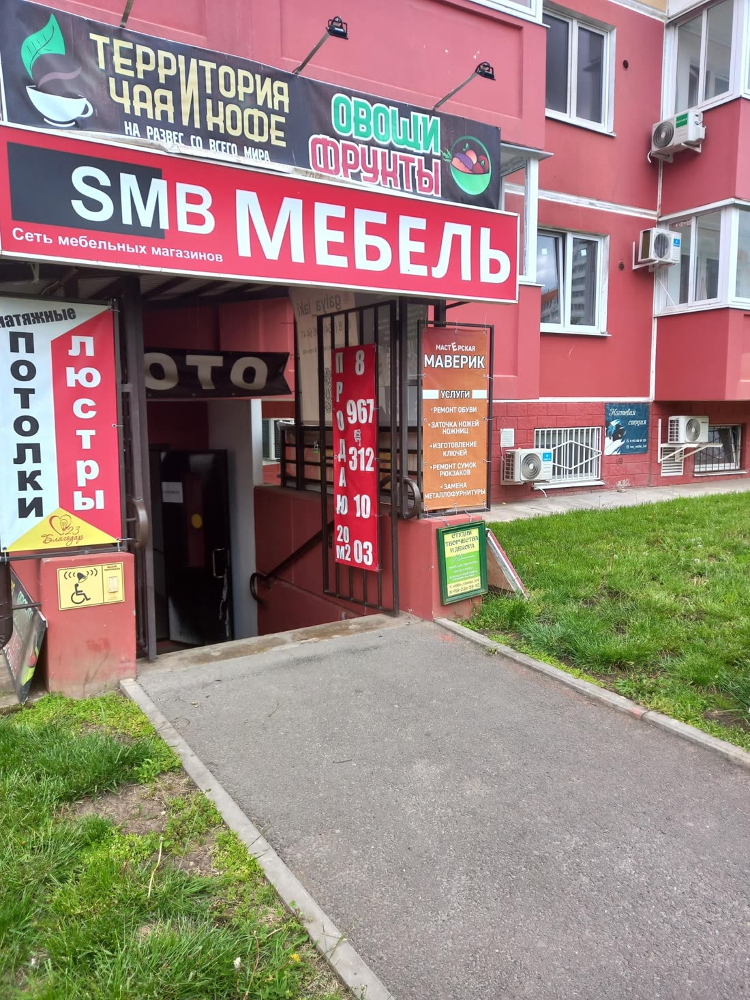

| 2ГИС | Яндекс Карты | |
|---|---|---|
| Рейтинг | 4,9 · 133 оценки | 4,9 · 37 оценок |
| Карточка подтверждена | Плашка «давно не обновляла данные» | Нет, «Вы владелец?» |
| Часы работы | 9:00–20:00 | до 20:00 |
| Цены | Нет | Нет |
| Ответы на отзывы | 0 из 50 | Нельзя, карточка не ваша |
| Сайт | Нет | Нет |
Что нашёл
Карточка в Яндекс Картах никому не принадлежит важно
На карточке висит «Вы владелец этой организации?». Пока она не подтверждена, вы не можете отвечать на отзывы, менять часы и фото, добавлять цены. Рядом Яндекс показывает «Сверхновую мастерскую»: 5,0, 110 оценок и значок «Хорошее место 2026».
2ГИС пишет каждому: «Компания давно не обновляла данные» важно
Эту строку видит каждый, кто открывает карточку. Человек, которому срочно нужен ключ, читает её как «может, уже закрылись» и звонит соседям. В разделе «Актуальность данных» тоже стоит «не подтверждена».
Часы на двери и в 2ГИС не совпадают важно
На табличке у двери написано «10–20», а в 2ГИС «ежедневно с 9:00 до 20:00». Кто придёт в 9:15 по карте, упрётся в закрытую дверь. Так обычно и появляются редкие злые отзывы.

102 отзыва без единого ответа заметно
Люди пишут «лучшая мастерская ключей на районе», «реанимировал кроссовки», «очень светлый человек». Ни на один отзыв нет ответа. Ответы видят будущие клиенты, а карты выше показывают тех, кто отвечает.
Нет цен, и клиенты спрашивают о них сами заметно
Вкладка «Цены» в 2ГИС пустая. В «Вопросах о месте» люди спрашивают «Сколько стоит заточка ножа?», «Нужна ли предоплата?», а отвечаете не вы, а ИИ-помощник 2ГИС.
На вашей карточке рекламируются конкуренты заметно
В блоке «Похожие организации» прямо под вашим адресом: «Ключ под ключ: скидка 20% на изготовление от 5 копий» и «Элит класс: изготовление всех видов ключей» с кнопкой «Позвонить».
В карточках не все ваши услуги просто
На вывеске: ремонт обуви, заточка ножей и ножниц, ключи, ремонт сумок и рюкзаков, замена фурнитуры. В 2ГИС только три рубрики: заточка, ремонт обуви, ключи. По запросам «ремонт сумки» или «заменить молнию» вас в 2ГИС не найдут.

Вход трудно найти просто
Мастерская в цокольном этаже, вход между «Потолки, люстры» и «SMB Мебель». Из 91 фото в 2ГИС снаружи только 5, и маршрута до двери нет. Для срочного клиента это лишние 5 минут поиска и звонок «а где вы?».

В Яндексе в 3,5 раза меньше оценок, чем у соседа просто
У вас 37 оценок, у «Сверхновой мастерской» 110. Клиенты довольны, просто их никто не просит оставить отзыв.
Что предлагаю
Беру на себя всё из списка: вам нужно только подтвердить карточки по коду из СМС.
- Подтвердить карточки в 2ГИС и Яндексе, выставить единые часы, рубрики и цены
- Ответить на все отзывы и дальше отвечать на новые
- Поставить хорошие фото: вход, мастерская, работы
- Сайт мастерской со ссылкой из обеих карточек: вот концепт
- Раз в месяц отчёт: сколько людей посмотрели карточку, позвонили и построили маршрут
Разбор бесплатный. Стоимость работ обсудим, она небольшая.